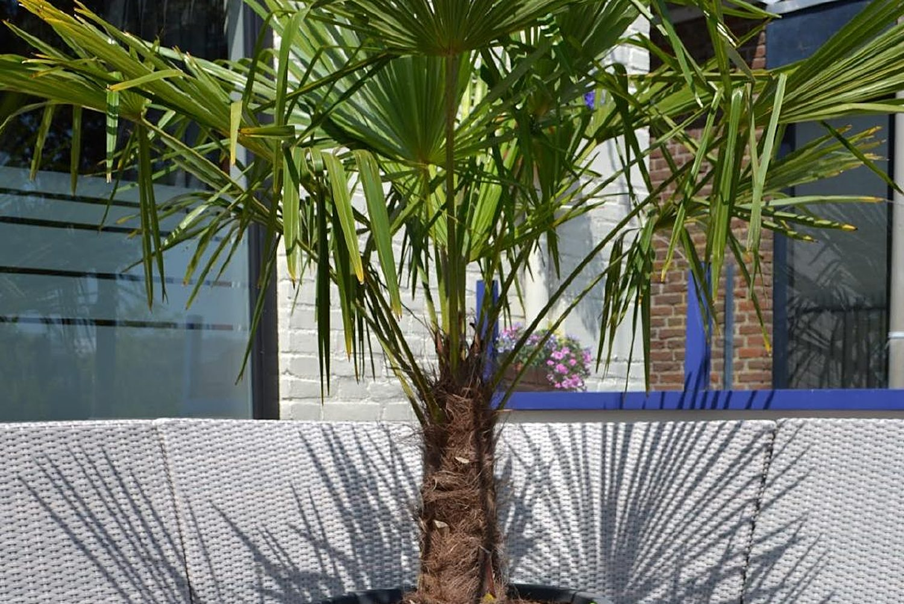
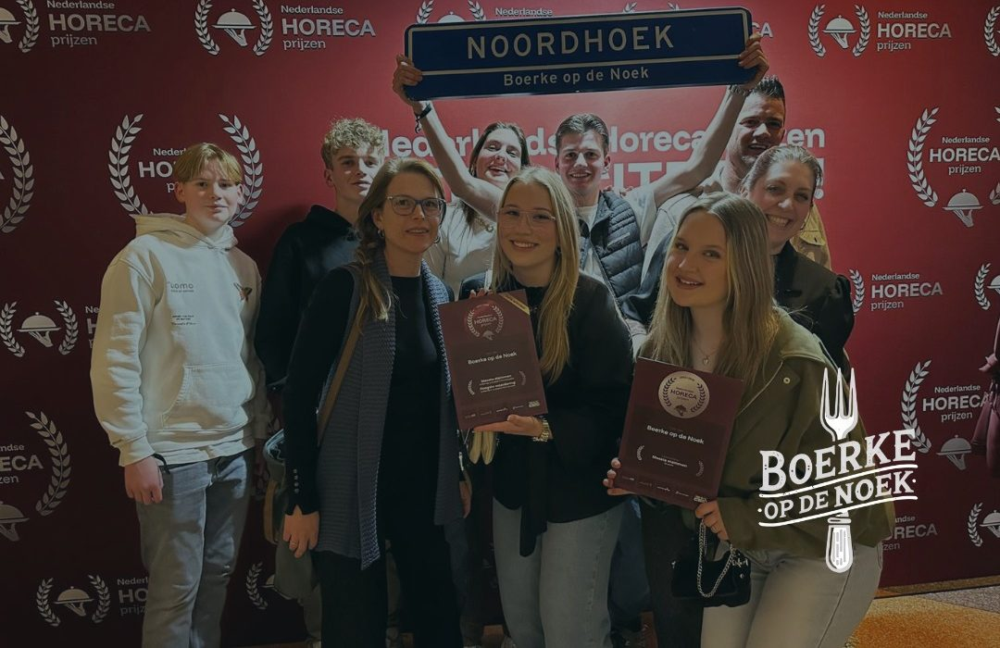
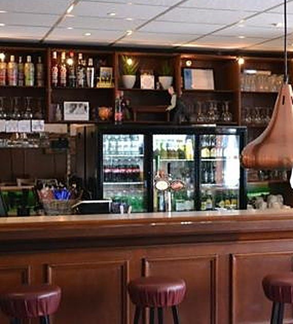
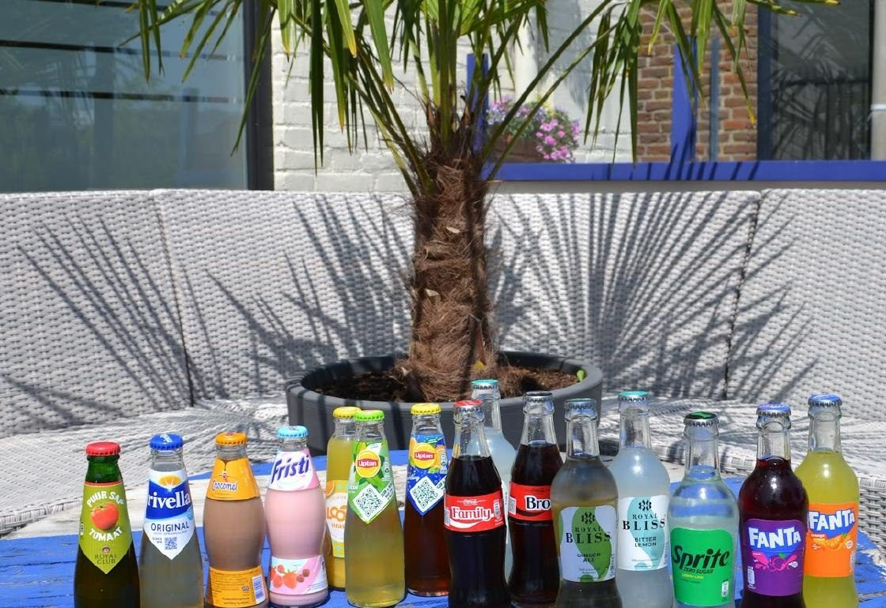
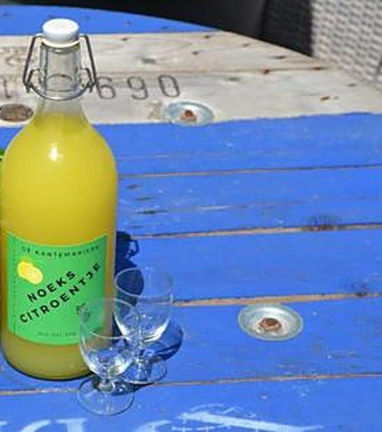
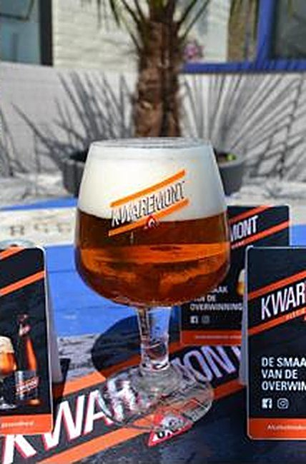

Homemade Sticky Chicken Bucket
250 gram krokante kip in tempurabeslag, met teriyakisaus, sesamzaadjes en bosuitjes.
€ 11,-
Voor een biertje aan de bar, een goed bord eten of een avondje darten. Bij de Nederlandse Horeca Prijzen werden we 2e van Nederland in de categorie Café / Bar. Open van donderdag t/m zondag.
Elke week staat er iets anders op het menu. Op Instagram en Facebook zie je als eerste wat het wordt.
250 gram krokante kip in tempurabeslag, met teriyakisaus, sesamzaadjes en bosuitjes.
€ 11,-Twee verse hamburgers van de grill met uitgebakken spek, cheddar en Boerkes burgerspeciaalsaus.
€ 12,50In boter gebakken, gevuld met ham en kaas, met huisgemaakte appelmoescompote en frites.
€ 15,50Grote friet of XXL pita met kippendijfilet in Boerkes hete kipsaus en zoetzure komkommersalade.
€ 13,50Gegrilde kip van de BBQ, mais, rode ui, paprika en kaas, met rucola en salsa.
€ 13,50Gehaktbal van 200 gram met sperziebonensalade, friet en mayonaise.
€ 14,50Een greep uit onze nieuwe menukaart. De kroketten en bitterballen zijn lokaal ambachtelijk.
Bekijk de hele menukaart →
Op 23 januari stonden we op het gala van de Nederlandse Horeca Prijzen in Zeist. Dankzij iedereen die op ons stemde, vielen we in de prijzen in de categorie Café / Bar.
Er is altijd wat te doen. Zet de data alvast in je agenda.
Gesloten van maandag 21 t/m woensdag 30 december en op vrijdag 1 januari.
"Lekker gegeten met z'n drieën, goede sfeer en hele vriendelijke mensen ,paar speciaal biertjes op ,het was toppie!!! Komen hier zeker terug.."
"Heerlijk gegeten, leuke sfeer en perfecte bediening!"
"Heerlijk gegeten bij Boerke op de Noek! Vriendelijk personeel en een gezellig terras!"

Begin 2025 namen Mark en Annemiek Verschuren café Noordhoek over en gaven ze het de naam Boerke op de Noek. Sindsdien kun je hier terecht voor een drankje en een maaltijd.
Je drinkt een Bolleke De Koninck van de tap of ons Noeks Citroentje, je eet van de kaart of de snack van de week, en je speelt mee met de pubquiz of het darttoernooi.
Bij mooi weer zit je op het terras, aan de blauwe haspeltafel onder de palm.



Sint Jozefstraat 19
4759 BC Noordhoek
Gemeente Moerdijk